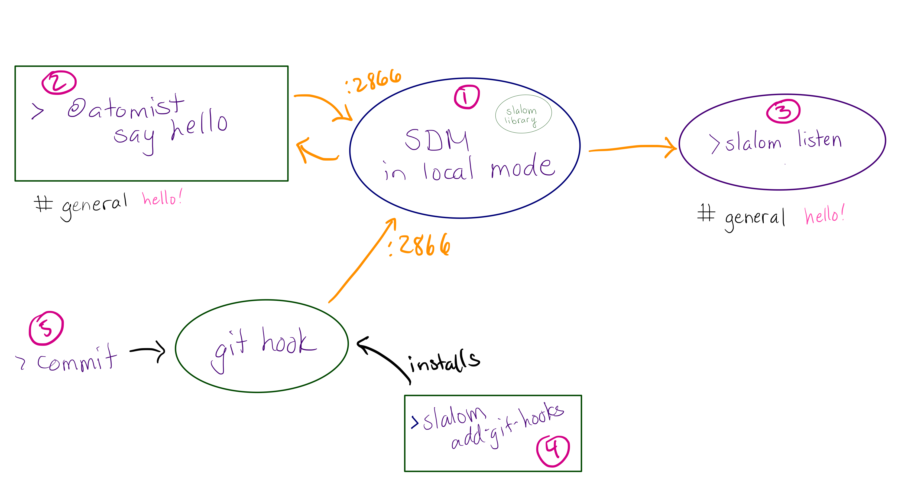

Software Delivery Machine - Local - @atomist/sdm-local

A Software Delivery Machine (SDM) helps you write and deliver code that is up to your own standards, at scale. This project runs a software delivery sdm.machine locally on your sdm.machine, responding to your commands and your commits.
For instance:
- Every time you make a commit, perform a build in the background, and tell you if it fails.
- every time you make a commit, fix trivial linting errors.
- at your command, perform common code changes that you program (such as upgrade a library). It can do this across all the repositories you have checked out, and tell you if this causes any build failures.
- at your command, create a new project by copying and modifying a working project you already have.
For more information on software delivery machines, see Rod Johnson's blog Why you need a Software Delivery Machine. This video shows an SDM in action. The blogs and videos show an SDM that connects to Atomist's cloud service. This repository contains a local software delivery sdm.machine that works on your development sdm.machine and responds to your commits, performing whatever actions you decide should happen in response to new code.
The SDM framework understands code and delivery flows. Further description is in the Atomist sdm library project.
This project is purely open source and can be used without the Atomist service. However, the code you write it can run unchanged to benefit your entire team if you do connect to the Atomist service, as the
SoftwareDeliveryMachineAPI is identical between local and cloud SDMs.
Quick Start
Prerequisites
- Node (version??)
Steps
Install the atomist CLI with the following command.
npm i -g @atomist/cliUse the following command to create a new SDM:
atomist create sdmThis will create a new SDM instance in a git repository on your local drive, by default under <user home>/atomist/<org>.
In order to see what's happening across all your automation clients, start a local listener to the Atomist lifecycle feed. This plays the same role as Atomist lifecycle in Slack, showing activity on your repositories. The console will display messages:
atomist feedOptional: You likely want CD for your own SDMs. (Otherwise, you can start and stop them yourselves, for example in your IDE.) SDM CD requires special support as an SDM would need to shut itself down to deliver itself. Thus there is a command to run a dedicated SDM to deliver other SDMs. Start it as follows:
atomist deliverUsage
Overview
You customize an SDM to work with the code you care about: fix formatting errors (with commits), perform code reviews, run tests, publish artifacts, etc.
It also responds to your commands: to create new projects, edit code in existing projects, or other actions you program into it.
The instructions here will take you through
- Initializing your local SDM
- Seeing it react to a push, then changing how it reacts to your push
- Creating a new project with a generator
- Changing to project creation to work from a project of your choice
- Invoking a code transform to change code in one or more projects, then writing your own code transfor
- Running a command, then making your own commands
Later, when they've proven useful, you can elevate your push reactions, generators, editors, and commands into the cloud for your whole team to use with Atomist.
Here is an architecture diagram:

Setup
To create your local SDM, execute:
atomist create sdmThe SDM works only on git repositories.
To find projects on your filesystem, the SDM looks in directories group by owner (on GitHub, the owner is an organization or user; on BitBucket, the owner is a user or a BitBucket Project), and it looks for each owner directory under one parent directory.
The directory structure looks like this:
$ATOMIST_ROOT
├── owner1
│ ├── repo1
│ └── repo2
└── owner2
├── repo3
└── repo4
ATOMIST_ROOT defaults to <user home>/atomist.
3) Send commit events from your repositories to your SDM. See "Configure existing projects" below. TODO: test this. how does it know
Startup
Install the cli: npm install -g @atomist/cli
Start your SDM in local mode by setting an environment variable and then invoking the atomist CLI. ATOMIST_MODE=local atomist start. The SDM will run in the background, listening for commands and events. This terminal will display logs.
Trigger commands with atomist <command> in another terminal. Try atomist say hello! Your SDM will send messages right back to where you ran the command.
Events are triggered by git postCommit hooks. Messages from events don't come back to wherever you made the commit. Instead:
See messages from events
In order to see messages from events (not interspersed with logs), activate a message listener in another terminal:
atomist feed
You can narrow down messages with the channel option. For example, this will display only messages to the given two services:
atomist feed --channel=AccountService --channel=BillingServiceYou can use the --verbose flag to show more information about command invocation. This is particularly useful when developing your SDM.
Configure Existing Projects
If you already have repositories cloned under your $SDM_PROJECTS_ROOT, configure them to activate the local SDM on commit.
Add the Atomist git hook to the existing git projects within this directory structure by running the following command:
atomist add git hooksSuccess will result in output like the following:
2018-06-06T11:23:58.003Z [m:85087] [info ] Adding extension pack 'WellKnownGoals' version 0.1.0 from Atomist
2018-06-06T11:23:58.051Z [m:85087] [info ] Searching under child directory [spring-team] of /Users/rodjohnson/temp/local-sdm
2018-06-06T11:23:58.052Z [m:85087] [info ] Searching under child directory [undefined] of /Users/rodjohnson/temp/local-sdm
2018-06-06T11:23:58.053Z [m:85087] [info ] Searching under child directory [x] of /Users/rodjohnson/temp/local-sdm
2018-06-06T11:23:58.074Z [m:85087] [info ] addGitHooks: Adding git post-commit script to project at /Users/rodjohnson/temp/local-sdm/spring-team/danger-mouse
2018-06-06T11:23:58.076Z [m:85087] [info ] addGitHooks: Adding git post-commit script to project at /Users/rodjohnson/temp/local-sdm/spring-team/fiddlesticks
2018-06-06T11:23:58.077Z [m:85087] [info ] addGitHooks: Adding git post-commit script to project at /Users/rodjohnson/temp/local-sdm/spring-team/foo
2018-06-06T11:23:58.078Z [m:85087] [info ] addGitHooks: Adding git post-commit script to project at /Users/rodjohnson/temp/local-sdm/spring-team/losgatos1
2018-06-06T11:23:58.079Z [m:85087] [info ] addGitHooks: Adding git post-commit script to project at /Users/rodjohnson/temp/local-sdm/spring-team/spring-rest-seed
2018-06-06T11:23:58.080Z [m:85087] [info ] addGitHooks: Adding git post-commit script to project at /Users/rodjohnson/temp/local-sdm/x/yRunning
atomist add git hooksis only necessary for pre-existing cloned directories and directories that are cloned usinggitrather than the local SDM.
Reacting to commits
A software delivery sdm.machine reacts to code changes. For instance, when you commit to a Spring Boot application, it can start the app up locally, while running tests. When you commit to a Node library, it can publish a snapshot to npm, while running tests, and while fixing any formatting errors and performing automated code review and identifying sensitive changes.
Make a commit in any repository within $SDM_PROJECTS_ROOT, and the SDM will run immediately.
Commits to managed repos generate Atomist push events.
Adding to your SDM
The API is identical to the API of a cloud-connected Atomist SDM.
Adding projects
Further projects can be added under the expanded directory tree in three ways:
Normal git Clone
Cloning any git project from anywhere under $ATOMIST_ROOT and running atomist add git hooks to add git hooks to it.
Symbolic Link
Go to the correct organization directory, creating it if necessary. Then create a symlink to the required directory elsewhere on your sdm.machine. For example:
ln -s /Users/rodjohnson/sforzando-dev/idea-projects/flight1Then run atomist add git hooks and the linked project will be treated as a normal project.
'atomist clone' Command
The easiest way to add an existing project to your SDM projects is: run the atomist clone command to clone a
GitHub.com repository in the right place in the expanded tree and automatically install the git hooks:
atomist clone https://github.com/<owner>/<repo>
The arguments are the same as those to git clone.
This is the recommended way, as it will run Atomist onboarding events for a new repo.
Output will look as follows:
018-06-06T11:27:27.068Z [m:85220] [info ] Adding extension pack 'WellKnownGoals' version 0.1.0 from Atomist
2018-06-06T11:27:27.116Z [m:85220] [info ] Adding GitHub project johnsonr/initializr
Cloning into 'initializr'...
warning: redirecting to https://github.com/johnsonr/initializr/
2018-06-06T11:27:33.349Z [m:85220] [info ] addGitHooks: Adding git post-commit script to project at /Users/rodjohnson/temp/local-sdm/johnsonr/initializrRunning Commands
All commands ("skills") on connected SDMs will be shown by the following command:
atomist show skillsThe CLI exposes the "intents" of all commands based on their command registrations. Type in intents as follows to activate the command:
atomist create springNo parameters beyond the command name are required to invoke an intent. However, command-specific parameters may be provided in options syntax.
Clashing intents cause ambiguity, which will be flagged in a warning message. Try to avoid clashing intents between your commands, within or across SDMs.
Architecture
This project consists of four parts:
- One or more Atomist SDMs running in their own processes, in a special local mode
- A command line, exposed as a Node binary.
githooks inserted in those projects you wish to use the local SDM with.- A feed listener process which, if running, will display all messages from the SDMs and some diagnostic information.
Troubleshooting
- My command isn't accepted by the CLI, nor shown in the usage message of
atomist --help: Check that the relevant SDM is running in local mode. The list of commands (beyond the built-in commands) is built dynamically on every invocation, so if the relevant SDM isn't running the SDM will not respond to those commands.
Advanced Setup
Mapped Parameters and Secrets
Environment variables
ATOMIST_ROOT: Default system-wide location for Atomist expanded directory tree. Defaults to<user home>/atomistATOMIST_GITHOOK_VERBOSE: Make Atomist git hooks synchronous (although they will never block a git action, and display output to the consoleATOMIST_TEAMS: Shared with Atomist cloud service. Comma-separated list of teams we will use.SLACK_TEAMSLACK_USER_NAME
Required Ports
The following ports are required:
2866: The default port for your Automation client. By default ports 2866-2876 are regularly checked for running automation clients, so if you restrict your clients to these ports you do not need to configure anything.6660: The default port for listening to all Atomist messages- [Port range above
10000]: Atomist will find free ports for routing messages back to command line. These ports will be used only during command execution.
To start additional automation clients, increment the port by 1 for each after 2866.
Roadmap
- Decide how to get build results from external tools in (if we wish to)